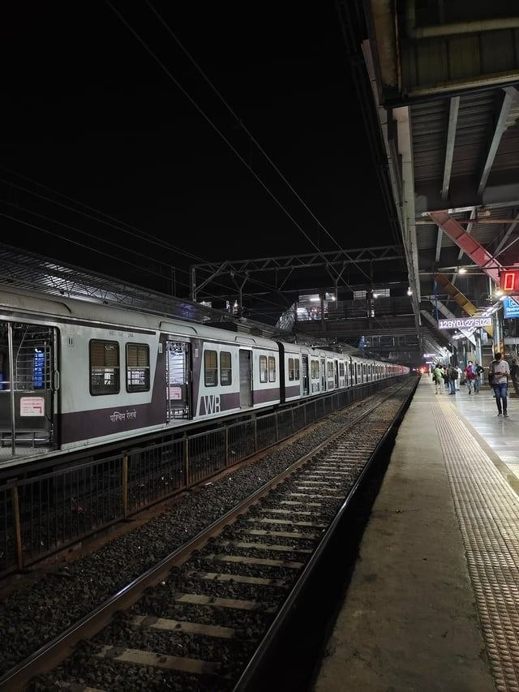
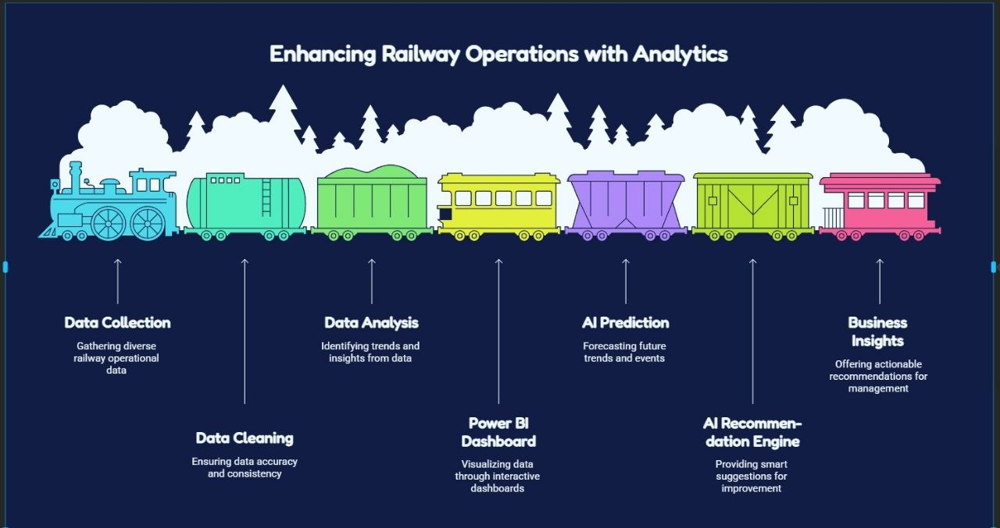
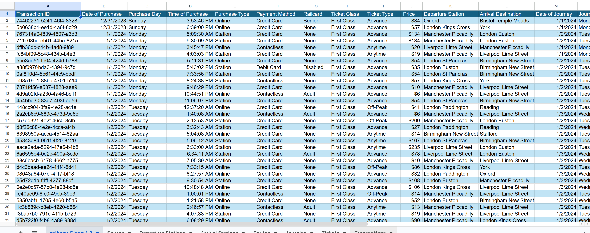
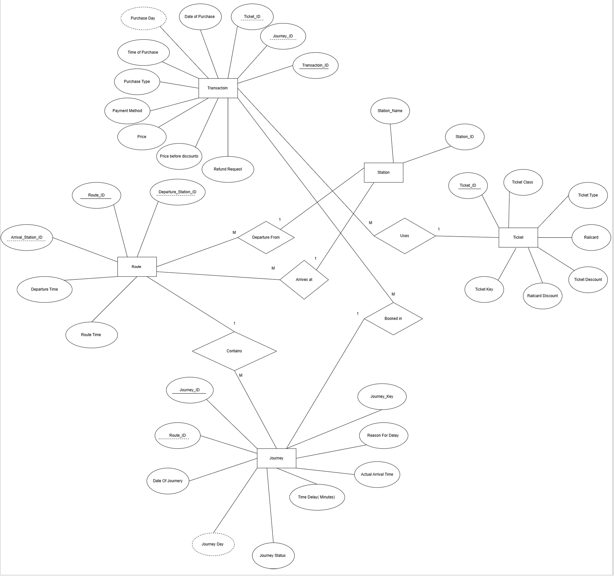

Power BI Dashboard Gallery
Explore the analytical dashboards developed for this project.


Analyze railway performance, monitor operational efficiency, explore interactive dashboards and discover AI-powered delay prediction through one modern analytics platform.
Key performance indicators from the UK Railway dataset.
Using Data Analytics and Artificial Intelligence to improve railway performance.
This project analyzes railway transportation data to discover hidden insights, monitor delays, improve operational efficiency and support decision-making using interactive dashboards and AI-powered prediction.

Everything needed to analyze railway operations in one place.
Explore railway performance using modern Power BI dashboards.
Analyze delays, revenue, routes and station performance.
Simulate intelligent delay prediction and recommendation.
Clean and prepare datasets using SQL, Python and Excel.
Measure station efficiency and operational performance.
Generate visual insights for better decision making.
From collecting railway data to AI-powered insights.

Collect railway journey and station datasets.
Prepare the dataset using SQL, Python and Excel.
Create interactive Power BI dashboards.
Predict delays and recommend improvements.
Cleaned railway dataset used for analysis and visualization.

The dataset contains railway journeys, ticket information, delay records, stations, routes and passenger statistics. After preprocessing, the data became ready for dashboarding and AI simulation.
Entity Relationship Diagram of the Railway Database.
The ERD illustrates the relationship between journeys, stations, routes, ticket types and delay records, forming the foundation of the analytical model.

Explore the analytical dashboards developed for this project.
AI techniques integrated into the Railway Analytics Platform.
Predict expected train delays using Machine Learning simulation.
Suggest operational improvements based on railway performance.
Estimate future revenue trends using historical data.
The tools and technologies used to build the project.
The talented team behind the UK Railway Analytics Platform.

Led the project, managed the team and performed data cleaning and preprocessing.
Designed and developed the website interface with a modern responsive user experience.

Performed business analysis and answered analytical questions using Python.
Designed Power BI dashboards and interactive business reports.

Designed the technical dashboard and built the database ERD.

Worked on AI concepts, prediction simulation and recommendation features.